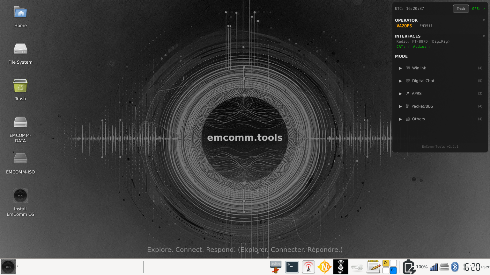

A bilingual (French/English) Debian-based Linux distribution purpose-built for amateur radio emergency communications. Boot from USB, connect your radio, and you are on the air — with JS8Call, Pat-Winlink, VARA, VarAC, fldigi, and YAAC with SAR plugin ready to go.
What It Is
EmComm-Tools OS Debian Edition is a ready-to-deploy Linux operating system that comes pre-loaded with everything a ham radio operator needs for digital emergency communications. Boot from a USB drive and you're operational.
This edition is built on Debian rather than Ubuntu, providing longer support cycles, no trademark restrictions on ISO redistribution.

Key Features
Bilingual interface — French and English with language selection at first boot
Pre-installed digital mode software: JS8Call, WSJTX, fldigi, Direwolf
Winlink client (pat) with VARA HF/FM pre-installed with developer permission
Wine32 pre-configured for Windows amateur radio applications
Offline-capable — all tools work without internet for SHTF scenarios
Ready-to-boot ISO images — no build process required
Optimized for field deployment on rugged hardware (Panasonic Toughpads)
Based on Debian Stable with 3–5 year LTS support cycle
Customizable foundation for clubs, regional groups, and emergency orgs
YAAC Plugin for SAR operations — Field teams can mark evidence and objects found during searches directly on the YAAC map.
Open source under Ms-PL license — fork it, make it yours
ISO Download
The current ISO (version 2.1.6) is approximately 4.7 GB and includes everything you need to get started. Maps are not included in the ISO to keep the download size manageable — on first run, the system will offer to download and install the map tilesets for your region.
For devices with limited internal storage (like Panasonic Toughpads), maps can be hosted on an external drive or USB thumb drive instead of the internal disk.
New offline repeater browser for finding and programming nearby repeaters. Import CSV exports from RepeaterBook — no API key required. Fully functional without internet after import.
CSV import — Export from repeaterbook.com, import into the app. Multiple imports merge automatically
Automatic geocoding — Locations are geocoded via OpenStreetMap (Nominatim) during import to compute grid squares and distances
Distance filtering — Filter repeaters by distance from your station (uses grid square from user profile)
Band & mode filters — Filter by band (10m/6m/2m/1.25m/70cm) and mode (FM/DMR/D-STAR/YSF/P25/NXDN)
Search — Search by callsign, frequency, location, or grid square
Sortable columns — Click any column header to sort ascending/descending
Favorites — Star repeaters to build a favorites list. Favorites filter overrides all other filters
Radio programming — One-click "Set" button programs frequency, offset, and CTCSS tone via rigctld
Progress bar — Real-time geocoding progress during import
Persistence — Repeater data and favorites saved/restored via USB persistence
Bilingual EN/FR
Digipeater Modes
Two new digipeater modes in the dashboard. Both run Direwolf with configurable PBEACON (position beacon) and CBEACON (comment beacon) values from user.json.
APRS Digipeater — Fill-in APRS digipeater in the dashboard's APRS section
Packet Digipeater — Packet radio digipeater in the dashboard's Packet/BBS section
Station Coordinates
Optional latitude/longitude fields in the firstboot wizard and user configuration app. Grid square auto-fills from coordinates using Maidenhead conversion. Used by the Repeater Directory for distance calculations and by the APRS Digipeater for position beacons.
VARA HF/FM and VarAC
VARA HF/FM — Pre-Installed
VARA HF and VARA FM modems are pre-installed in the ISO with written permission from José Alberto Nieto Ros (EA5HVK), the developer.
Users must still purchase their own license directly from EA5HVK to unlock full speed. The pre-installed version runs in demo mode until registered. Visit rosmodem.wordpress.com to purchase your license.
We are committed to keeping VARA updated with new releases as they become available.
VarAC — Pre-Installed
VarAC is pre-installed in the ISO and ready to use at first boot. It runs through Wine alongside VARA HF/FM for a complete digital communications setup out of the box.
USB Boot Creator Tools
The only software you need to get started is a USB boot creator. Here are the most reliable options:
Windows
Rufus — Fast, reliable, open-source. The gold standard for Windows.
Ventoy — Multi-boot capable — put multiple ISOs on one USB.
macOS
balenaEtcher — Best choice for Mac — simple, reliable, native app.
UNetbootin — Cross-platform, works well for Linux ISOs.
dd (Terminal) — Built-in, powerful but requires care.
Linux
balenaEtcher — Same simple interface, available as AppImage.
Ventoy — Install once, then just copy ISO files to USB.
GNOME Disks — Built into most GNOME desktops, use "Restore Disk Image".
dd — Classic Unix tool, fast and reliable.
For beginners, balenaEtcher works on all platforms and is the easiest option. For advanced users, Ventoy lets you put EmComm-Tools, a Windows installer, and system rescue tools all on one USB.
Why Debian?
EmComm-Tools OS Debian Edition has started with a simple fork of the original EmComm-Tools OS Community project by Gaston Gonzalez, TheTechPrepper (KT7RUN). The original was built on Ubuntu with the philosophy of creating a frozen-in-time "appliance." While this has merit, the ham radio software landscape evolves rapidly — when JS8Call, fldigi, or pat-winlink release fixes, you need to be able to apply them. A frozen OS makes this difficult or impossible, and when the base OS reaches end-of-life, your package manager stops working entirely.
Ubuntu is actually built on top of Debian. Moving from Ubuntu to Debian isn't a radical change — it's going back to the source. The main advantages:
No trademark restrictions — we can freely distribute pre-built ISO images
Longer, more stable release cycles (3–5 years LTS)
Direct access to Debian's extensive package repositories
Debian Ham Radio Pure Blend — JS8Call, WSJTX, fldigi, Direwolf all properly packaged
Community-driven project without corporate overhead
Active maintenance without the risk of a frozen, abandoned system
The Ham Radio Spirit
This project isn't a closed product. It's a vanilla starting point — a reusable, customizable foundation that radio clubs, regional groups, emergency organizations, and individual operators can fork and adapt to their own needs. Share the knowledge, build the community.
Contributing
This is an open-source project. Contributions, bug reports, and feature requests are welcome.
This project is a derivative work of EmComm-Tools OS Community, licensed under the Microsoft Public License (Ms-PL). In compliance with Ms-PL Section 3(C), we retain all copyright, patent, trademark, and attribution notices from the original software.
The Ms-PL allows creating derivative works, distributing pre-built ISO images, and modification and redistribution. The switch from Ubuntu to Debian eliminates the Ubuntu trademark restrictions that previously prevented distribution of pre-built images, while fully respecting the Ms-PL terms.
Acknowledgments
Gaston Gonzalez (KT7RUN) aka The Tech Prepper — Original EmComm-Tools OS Community project
The Debian Ham Radio Team — Maintaining excellent ham radio packages
José Alberto Nieto Ros (EA5HVK) — VARA HF/FM modem development
Irad Deutsch (4Z1AC) and the VarAC Development Team — VarAC chat application for VARA
Andrew Pavlin (KA2DDO) — YAAC (Yet Another APRS Client)
Martin Hebnes Pedersen (LA5NTA) — Pat Winlink
John Wiseman (G8BPQ) — linBPQ / QtTermTCP
Martin F N Cooper — Paracon
David Freese (W1HKJ) — fldigi
Joe Taylor (K1JT) and the WSJT Development Team — WSJT-X